| 1 | Sistemes de fitxers i particions |
1. Sistemes de fitxers i particions
Per a començar aquesta pràctica crearem un disc nou a la nostra màquina virtual d’uns 25 GB, seguidament accedirem a
la màquina virtual i obrirem la terminal per a després executar la comanda
“sudo fdisk -l”, gràcies a aquesta comanda podrem veure tots els discos i les seves
particions, en aquest cas veurem que el disc nou no te cap partició ni taula de particions o diferencia del disc del sistema.
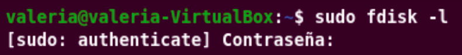
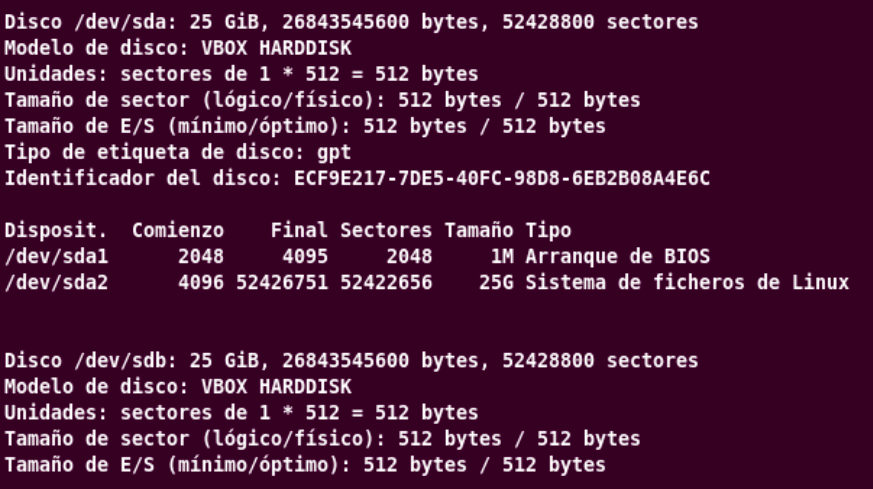
A continuació crearem la primer partició amb la comanda “sudo fdisk /dev/sdb”,
aquesta comanda obre una eina interactiva de particionament sobre el nostre disc sdb, lo primer que vam fer
és posar l’ordre m per a mostra les diferents opcions que podem fer servir.
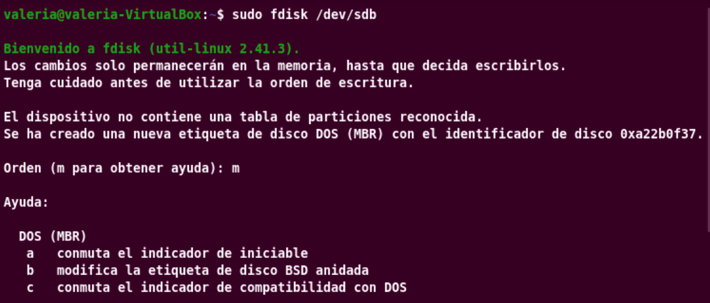
Seguidament crearem una partició nova posant l’ordre “n” i li especificarem que volem
que siga una partició primari afegint l’ordre “p”, en aquest cas en els següents apartats
polsarem ENTER per a fer servir predeterminat i per últim especificarem que l'últim sector siga d’1 GB.
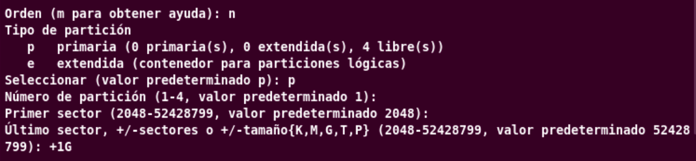
Després li demanarem amb p que ens mostri la taula de particions per a poder comprovar-ho, per últim
afegirem w per a escriure els canvis al disc i sortir del tot.
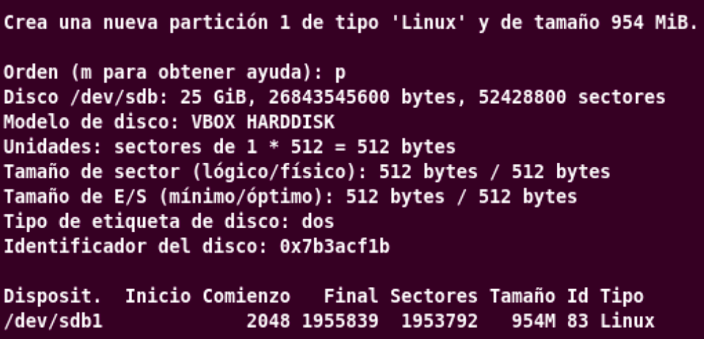
Ara amb la comanda “sudo fdisk -l /dev/sdb” comprovarem que en el nostre disc dur afegit
existeix la partició /dev/sdb1 d’un 1G tipus 83 LInux, com podem observar s’ha creat sense cap problema.
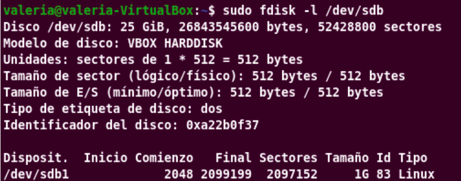
A continuació formatearem la partició /dev/sdb1 amb el sistema de fitxers ext4 amb el comandament
“sudo mkfs.ext4 -b 2048 -L particio1 /dev/sdb1”, aquesta comanda formata en ext4,
fa que el bloc tingui la mida de 2048 bytes amb el nom de partició 1.
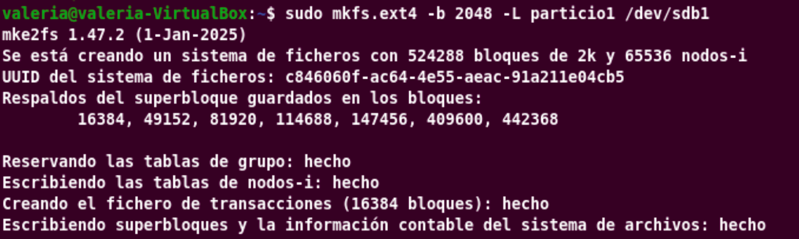
Comprovarem la info del sistema de fitxers amb les comandes “sudo tune2fs -l /dev/sdb1 |
grep Block” la qual mostra les línies de block (nom de blocs, la mida del bloc i blocs per grup),
seguidament executarem “sudo lsblk -f /dev/sdb” per a veure l’arbre dels tipus de sistema de fitxers
i amb “sudo blkid /dev/sdb1” veurem l’etiqueta, l’UUID, la mida de bloc, el tipus i el PARTUUID.
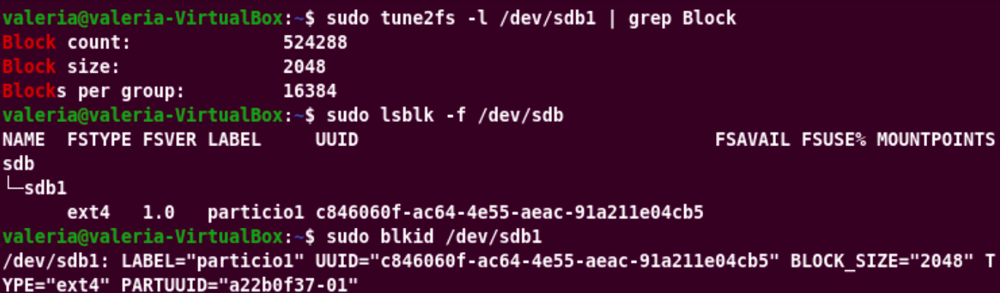
Seguidament crearem el punt de muntatge on apareixerà la partició amb “sudo mkdir -p /mnt/particion”,
després amb “cd /mnt” ens situem al directori mnt i a continuació muntarem la particio al directori amb
“sudo mount /dev/sdb1 /mnt/particion/”
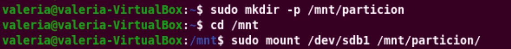
Després ens situem al directori particion amb “cd particion”, per a seguidament realitzar un
“ls” el qual ens mostra una carpeta que crea l’ext4 per a recuperat els fitxers i a continuació
crearem un directori amb “sudo mkdir prova” i un fitxer amb “sudo touch prova2”
i si realitzem altra vegada un “ls” podem veure el fitxer i directori que havien creat.
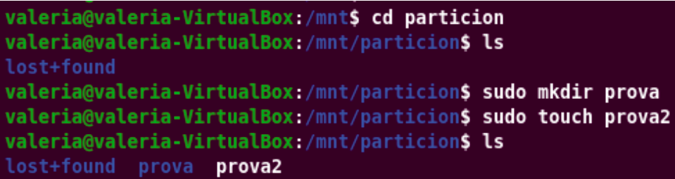
Tornarem al directori mnt amb “cd /mnt” i seguidament executarem la comanda
“sudo umount /dev/sdb1” per a desmuntar la partició, però el directori /dev/sdb1 segueix
existint, però buit, com podem observar en fer un “ls” altra vegada podem observar que existeix
el directori particion.
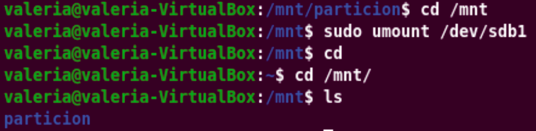
Seguidament amb “sudo mount -t ext4 /dev/sdb1 /mnt/particion/” tornarem a muntar-ho,
però indicarem el tipus de sistema de fitxers amb “-t ext4”, després de fer això podem observar
que en fer un “ls particion” ens mostren la carpeta prova i el fitxer prova2, això vol dir que són dades persistents.
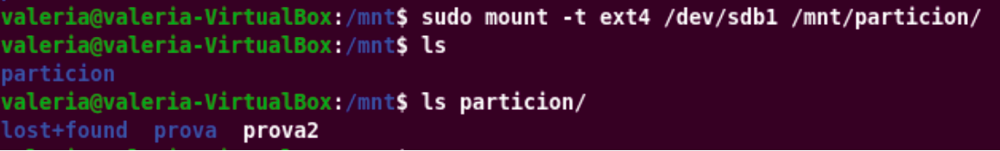
Abans de tocar el disc executarem el comandament “sudo umount /mnt/particion”
per a desmuntar-ho i no tindre cap problema.
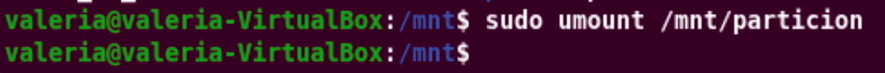
A continuació crearem la segona partició amb la mateixa comanda “sudo fdisk /dev/sdb” d
’abans, com abans utilitzarem l’ordre per a crear la segona partició i també farem servir “p”
per a què sigui una partició primari, com abans polsarem ENTER i l’especificarem que sigui d’una mida 1 GB.
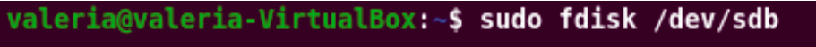
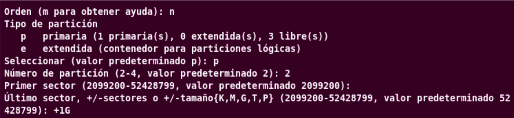
Comprovarem la particio creada amb l’ordre “p” i guardarem tots els canvis fet amb
l’ordre w, com podem visualitzar la partició s’ha creat correctament.
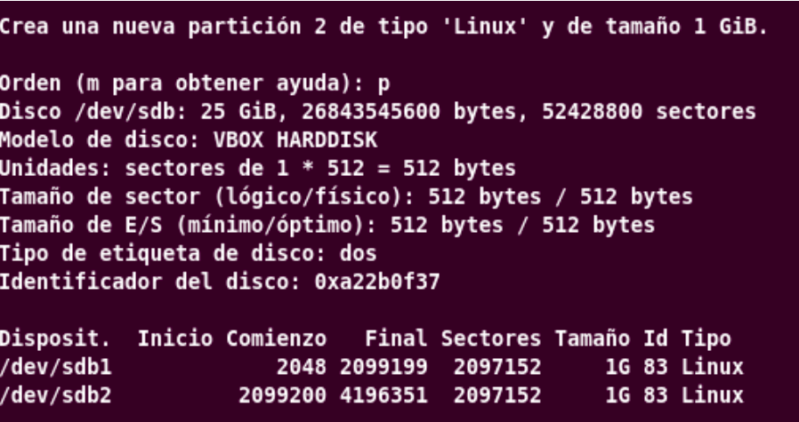
Seguidament amb la comanda “sudo mkfs.ntfs -f -L particio2 /dev/sdb2” formatarem la
partició amb el sistema de fitxers NTFS de forma rapida amb una mida de clúster de 4096 amb el nom partició 2.
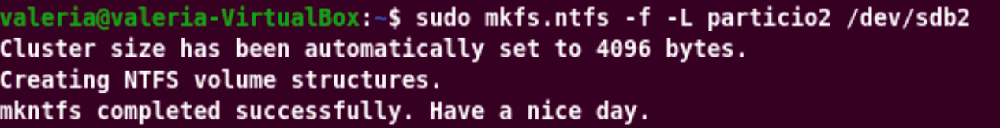
Ara farem servir la comanda “lsblk -f /dev/sdb” per a veure les dues particions creades
sdb1 ext4 i sdb2 ntfs i després executarem el comandament “sudo tune2fs -l /dev/sdb1 | grep "Block size"”
per a poder observar només la mida de bloc.
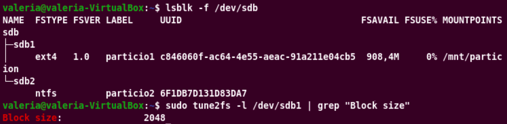
Després amb “sudo mkdir -p /mnt/particion2” crearem el segon punt de muntatge de la segona partició,
seguidament amb el comandament “sudo touch /mnt/particion/abans_de_muntar.txt” crearem un fitxer al
directori amb la particio desmuntada i amb “ls /mnt/particion” podem observar que tenim el fitxer creat afegit.
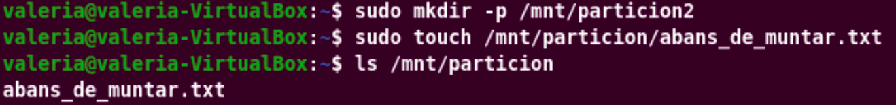
Si realitzem el seu muntatge amb el sistema de fitxers ext4 amb “sudo mount -t ext4 /dev/sdb1 /mnt/particion”
i després executem la comanda “ls /mnt/particion” podem observar que el fitxer abans_de_muntar.txt s’amaga,
perquè el seu contingut original s’amaga del directori, però al desmuntar-ho torna a aparèixer.
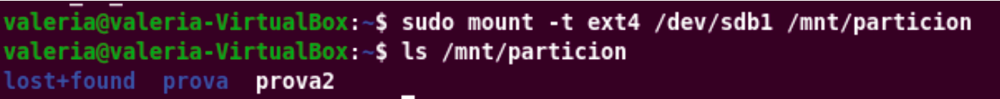
Seguidament executarem la comanda “sudo mount -t ntfs-3g /dev/sdb2 /mnt/particion2”
per a poder muntar la partició NTFS amb el controlador ntfs-3g, per a després executar “df -hT | grep sdb”
en mostra l’espai de disc de les particions sdb amb unitats llegibles i els tipus de sistema de fitxers.
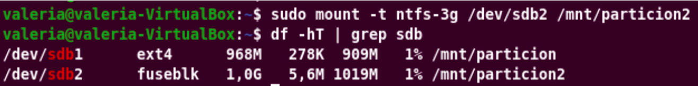
Canviarem el propietari i el grup del directori amb el nostre usuari amb “sudo chown valeria:valeria /mnt/particion”,
seguidament escriurem el text ‘hola’ en un fitxer nou amb “echo "hola" > /mnt/particion/prova1.txt”.
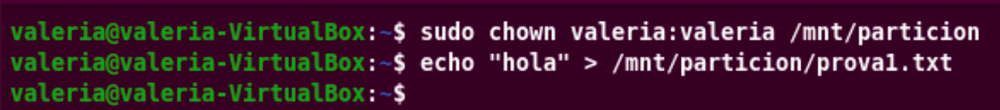
A continuació executarem la comanda “sudo umount /mnt/particion” per a desmuntar la partició sdb1, podem
observar que després de desmuntar-ho i fer “ls /mnt/particion” ens torna a sortir el fitxer
“abans_de_muntar.txt”, per últim elinaminarem el fitxer amb “sudo rm /mnt/particion/abans_de_muntar.txt”
i amb la comanda “sudo umount /mnt/particion2” demuntarem la partició NTFS.
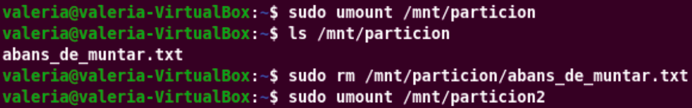
Farem una còpia de seguretat del fitxer abans de realitzar alguna modificació amb “sudo cp /etc/fstab /etc/fstab.bak”
i amb “sudo blkid /dev/sdb1 /dev/sdb2” ens mostra els UUID de les dues particions, ja que els farem servir per al fitxer
fstab, també buscarem l’identificador de l’usuari amb “id -u”, en el meu cas es 1000.
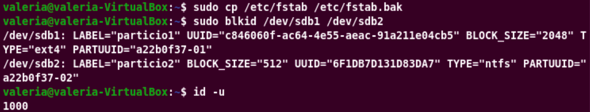
Accedirem al fitxer fstab amb la comanda “sudo nano /etc/fstab” i baixarem al final del fitxer i afegirem
els UUID de les particions la ruta on volem muntar-los, el seu sistema de fitxers amb els defaults per determinar les opcions estàndards
i el nofail per a que el dispositiu arranque igualment que no el detecti.
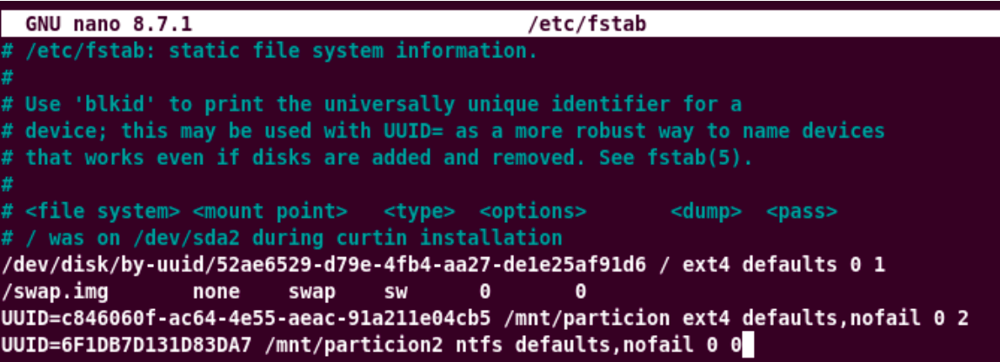
Farem que el sistema torni a llegir el fitxer fstab i apliqui els canvis amb “sudo systemctl daemon-reload”
i per últim executarem la comanda “sudo findmnt --verify” per a comprovar que el fstab estigui correcte,
en aquest cas podem observar que hi ha tres avisos per el fitxer /swap.img i dos per el NTFS perquè el nucli no inclou suport
natiu per a NTFS, ja que fa servir el ntfs-3g, però no son avisos greus.
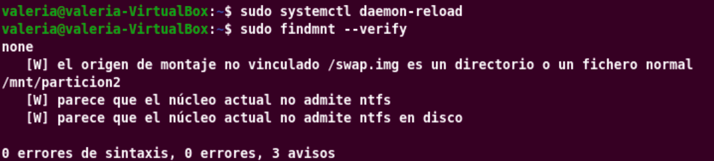
Abans de finalitzar muntarem tot el que hi ha dins del fstab amb la comanda “sudo mount -a” i amb
“df -hT | grep sdb” podem confirmar que les dues particions estan muntades correctament.
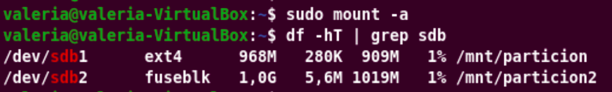
Per a finalitzar reiniciarem la màquina virtual amb sudo reboot i tornarem a obrir la terminal per executar la comanda
“df -hT | grep sdb” on podem observar que sense fer mount ja tenim les particions muntades sense cap problema
i amb “ls -l /mnt/particion /mnt/particion2” podem observar que tenim tots els arxius que hauren de quedar amb
l’usuari valeria
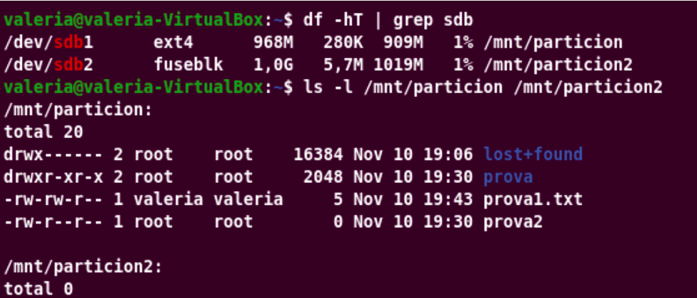
↑ Tornar a l'índex
2. Tipus de formateig
Per a començar aquesta pràctica accedirem dins del terminal i accedirem dins de l’usuari root amb
“sudo su”, per a seguidament executarem la comanda “apt install testdisk”
per instal·lar el paquet testdisk des dels repositoris d’Ubuntu.
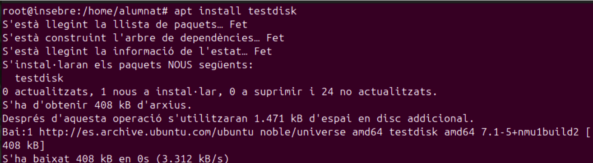
Seguidament crearem una carpeta anomenada practica des del root amb
“mkdir -p ~/practica”, després amb la comanda “cd ~/practica”
accedirem dins de la carpeta i per amb “pwd” podrem observar el directori actual on estem.
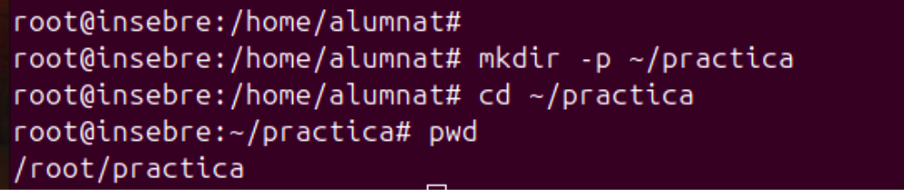
Després amb “mv /home/alumnat/Imatges/prova.png ~/practica/”
mourem la imatge prova,png a la carpeta de pràctica i amb “ls -l”
podrem veure la llista de continguts del directori en el que estem amb els seus permisos, propietari, mida de bytes
i la seva data, en aquest cas veurem la imatge prova.png afegida.
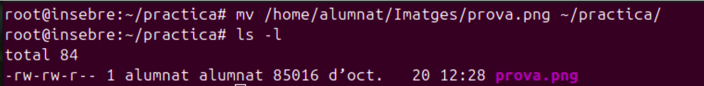
En aquest cas com abans farem servir el comandament “mv /home/alumnat/Baixades/RA2_NF1_A1_G3.pdf ~/practica/”
per a moure el PDF a la mateixa carpeta d’abans i com amb “ls -l” podrem veure els dos fitxers el png i el PDF afegit en la carpeta practica.
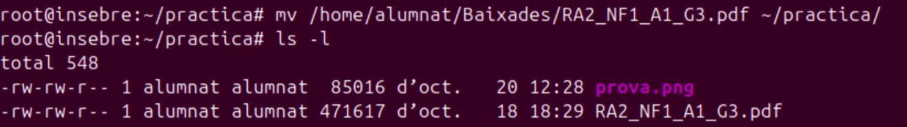
Per últim amb la comanda “echo "El meu secret és que m'encanta la pizza amb pinya" > notes.txt”
crearem un fitxer txt anomenat notes.txt i afegirem el text que s’ha posat en el echo, seguidament executarem la comanda
“ls -l”, gracies a aquesta comanda podrem veure el fitxer afegit amb conjuntament amb els altres dos.
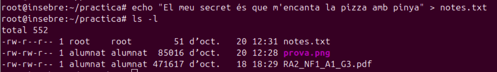
A continuació copiarem les dades a baix nivell en un fitxer que te zeros amb una mida de bloc d’1 MiB que ens copia 200 blocs utilitzant la comanda
“dd if=/dev/zero of=disc.img bs=1M count=200 status=progress”, podem observar que ens dona com a resultat un fitxer de 200 Mib ple de
zeros que farà com a disc virtual.
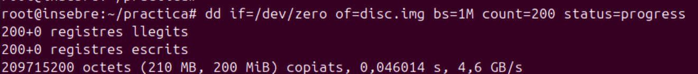
Seguidament comprovarem la mida llegible del disc amb la comanda “ls -lh disc.img”, gracies això podem saber que la seva mida és d’uns 200M.
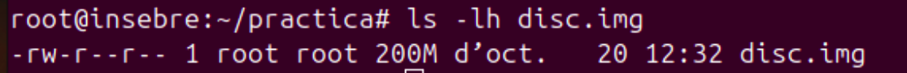
Ara crearem un sistema de fitxers ext4 dins del fitxer disc.img, això realitza un formateig ràpid, ja que es reescriu
les estructures dels superblocs, taules d’inodes, diari, etc, però no s'esborra cap dades amb la comanda “mkfs.ext4 disc.img”
, podem observar que en la sortida ens diu que descarten els blocs del dispositiu, que s’han creat el sistema de fitxers amb 51200 de 4k i 51200 nodes i
un UUID únic pel sistema, també els backups del superbloc es guarden al bloc 32768.
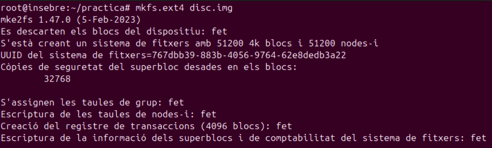
Ara executarem la comanda “mkdir -p /mnt/prova” per a crear el punt de muntatge, que en aquest cas s’ha anomena prova i amb
“mount -o loop disc.img /mnt/prova/” muntarem el fitxer disc.img com si fos un disc utilitzant un dispositiu loop, que ens deixa
tractar un fitxer com a un dispositiu de blocs.
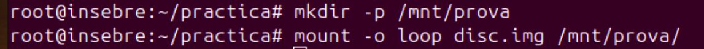
Després copiarem els tres fitxers al disc que hem muntat amb la comanda “cp prova.png RA2_NF1_A1_G3.pdf notes.txt /mnt/prova/”
i seguidament realitzarem un “ls -l /mnt/prova” on ens mostraran els tres fitxers afegits i la carpeta lost+found la qual es crea
per si sola al fer servir ext4.
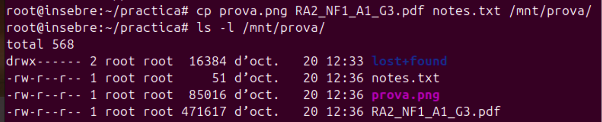
Seguidament cacularem el hash SHA256 de cada fitxer original i els dea al fitxer originals.sha amb la comanda
“sha256sum prova.png RA2_NF1_A1_G3.pdf notes.txt > originals.sha” i després executarem “cat originals.sha”
els quals ens mostren els hash que s’han guardat en el fitxer dels tres fitxers.
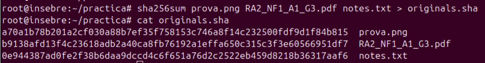
Executarem la comanda “sudo umount /mnt/prova” per a desmuntar el disc, però ens han d’assegurar que tot s’ha escrit correctament.
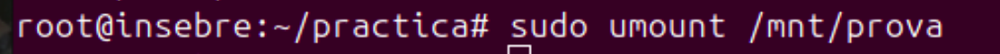
A continuació utilitzarem la comanda “mkfs.ext4 -E nodiscard disc.img”
per a tornar a formatar amb opcions mes estesteses i evitar que es descartin els blocs, de manera que les dades antigues segueixen
físicament al disc, com volem continuar amb el procediment posarem y, perque com ha detectat un antic sistema de fitxer, ens pregunta
això per a estar segurs, com podem veure ens crea un nou UUID.
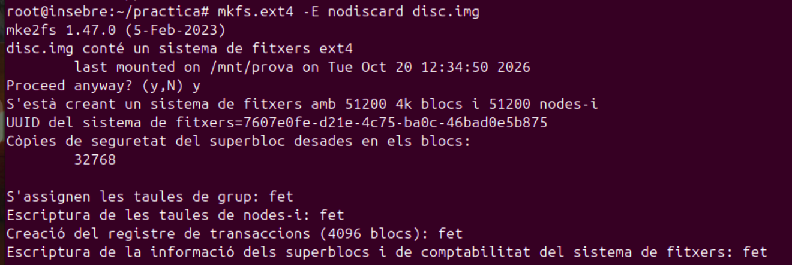
Seguidament tornarem a muntar el disc-img altra vegada amb “mount -o loop disc.img /mnt/prova”
, altra vegada executarem la comanda “ls -l /mnt/prova” per a veure que no hi ha cap fitxer almenys que no
sigui el lost+found, per últim farem servir la comanda “umount /mnt/prova” per a desmuntar el disc.img.
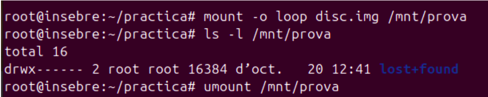
Ara amb el comandament anomenat “photorec /d recup /cmd disc.img options,fileopt,everything,enable,search”
és creara una carpeta de destinació recup1 i executara la seqüència d’ordres sobre el disc i per últim ens activa la cerca de tots
els tipus de fitxers i s’inicia la seva cerca.
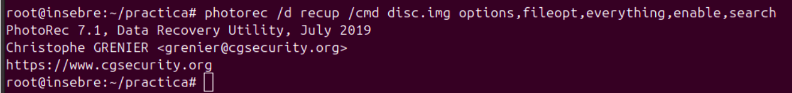
Amb “ls recup1” podem observar que ens mostren tres fitxers amb diferents nom com el PDF, el png i el report recuperats
, seguidament amb “sha256sum recup.1/*” calcularem els hashes dels recuperats i amb la comanda “cat originals.sha”
veurem els hashes originals per a fer la comparació, en aquest cas tant com el PDF i el PNG tenen els hashes idèntics, però no podem veure el txt perquè
els fitxers de text pla no tenen una signatura reconeixible.
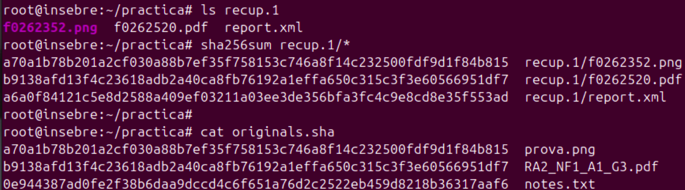
Després amb la comanda “strings -e s disc.img | grep pizza” ens extreu del fitxer les cadenes de text imprimible i ens filtra
les línies amb la paraula pizza, per això com a resposta ens apareix “s que m’encanta la pizza amb pinya”, això ens demostra que
el text continua dins del disc.
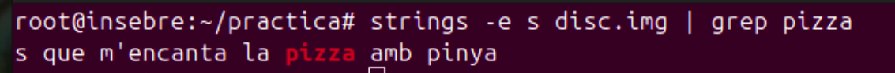
Seguidament executarem “dd if=/dev/zero of=disc.img bs=1M count=200 conv=notrunc status=progress”
fa el mateix procés que abans, però en aquest cas no busca el fitxer, d’aquesta manera es sobreescriu els 200 MiB existents amb zeros.
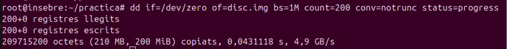
A continuació executarem la comanda “photorec /d recup_zeros /cmd disc.img options,fileopt,everything,enable,search”
per a realitzar altra recuperació però en aquest cas anomenada recup_zeros1, seguidament amb “ls recup_zeros1”
podem observar que sols hi ha el report-xml i que no s’ha recuperat cap fitxer.
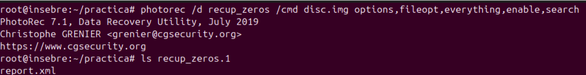
Ara si realitzem altra vegada la búsqueda del text “pizza” amb la comanda “strings -e S disc.img | grep pizza”
, en aquest com podem observar no ens surt res, això vol dir que el text ha desaparegut.
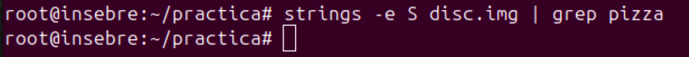
Per a finalitzar el treball executarem la comanda “rm -rf disc.img recup.1 recup_zeros.1 originals.sha”
per a eliminar la imatge, les carpetes de recuperació realitzades i el fitxer de hashes.
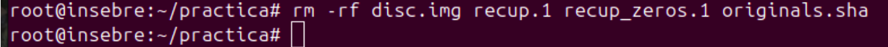
Ara si comprovem per última vegada podem observar que ens fer “ls” dins del directori “~/practica” que tenim els tres fitxers originals.
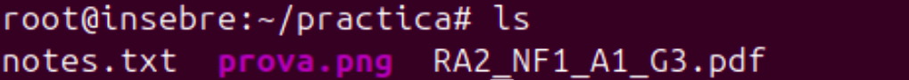
↑ Tornar a l'índex
3. Gestió de processos
Per a començar aquest treball accedirem al terminal i executarem “sudo su”
per a accedir com l’usuari sudo, seguidament crearem una carpeta anomenada missió amb la comanda “mkdir ~/missio”.
Seguidament accedirem dins de la carpeta creada amb la comanda “cd ~/missio”, per a després executar la comanda
“pwd” i veure com a resposta la ruta on estem, en el meu cas surt “/root/missio”.
Ara crearem el primer script anomenat minador que ens demana el treball per a fer-ho executarem la comanda “nano minador”.
Dins del fitxer escriurem tres línies “#!/bin/bash” aquesta linea especifica quin programa ha d’executar l’script en aquest cas el bash,
“# Gasta CPU sense parar” la segona és un comentari i “while true; do :; done”, l'última és un bucle que mai finalitza,
però no fa res, però igualment fa que la CPU gasti.
Guardarem tots els canvis polsant “Ctrl +o” i sortirem del fitxer amb “Ctrl +x”, seguidament comprovarem que en el fitxer
s’hagi desat bé el contingut, per això executarem la comanda “cat minador”, com podem observar tot el contingut s’ha guardat sense cap problema.
A continuació observarem els permisos del fitxer creat, per a fer-ho executarem la comanda “ls -l minador”, com podem veure que el propietari
té els seus permisos els quals són de lectura i escriptura, que els grups tenen el permís de lectura i que la resta també té el mateix, seguidament si intentem executar-
ho amb “./minador” no podrem perquè no tenim el permís d’execució.
Seguidament executarem la comanda “chmod +x minador” per a donar-li permís d’execució a l’usuari, als grups i als altres,
per a després executar “ls -l minador” per a tornar a mirar els permisos del fitxer, com podem observar en aquest cas tots tenen el permís d’execució.
Ara crearem un nou fitxer amb la comanda “nano backup_nocturn” per a crear el segon script per a poder realitzar un backup que es passa el temps esperant.
Dins del fitxer escriurem tres línies el “#!/bin/bash” per a indicar al sistema que aquest script que estem creant l’executi el /bin/bash,
després escriurem “# Simula una còpia de seguretat que espera” aquest és un comentari ja que comença amb #, això lo ignora el bash i per últim afegirem
la linea “while true; do sleep 60; done” per a fer un bucle infinit i que es queda parat 60 segons després de cada volta.
Com abans comprovarem el contingut del fitxer amb el comandament “cat backup_nocturn”, en aquest cas com abans tot el contingut s’ha guardat correctament.
Ara crearem el tercer fitxer per a crear el tercer script anomenat espia, per a poder fer-ho executarem la comanda “nano espia”.
Dins del fitxer afegirem la linea “#!/bin/bash” per indicar que el script l’executa el /bin/bash, després afegirem la segona la linea
“# No es deixa tancar amb un kill normal” el qual es un comentari per al script, en aquest cas la tercera línea hem de posar
“trap 'echo "[espia] SIGTERM? Ni parlar-ne!"' TERM” per a definir que fer quan el procés recibeix la senyal i ens envia una senyal la qual envia
un kill PID per defecte i al finalitzar la comanda imprimeix el missatge Ni parlar-ne, per últim afegirem la linea “while true; do sleep 2; done”
per a crear un bucle infinit que fa dormir 2 segons en cada volta, per a que el procés sigui viu.
Com als altres scripts guardarem els canvis fets i sortirem del fitxer, per a continuació executar el comandament “cat espia”
i comprovar que el contingut s’hagi guardat completament.
A continuació crearem el 4 script anomenat descarrega.sh, per a fer-ho executarem la comanda “nano descarrega.sh” i accedirem dins del fitxer.
Dins del fitxer afegirem les línies que apareixen en la imatge per realitzar una simulació de la descàrrega de una ISO d’Ubuntu, com es comparteix
la CPU amb l’script dels miners, poden tardar més quan competeixen per la CPU i això deixa observar l’efecte dels processos sospitosos.
Com als anteriors scripts guardarem tots els canvis i sortirem, seguidament executarem la comanda “cat descarrega.sh”
, com les anteriors podem observar que apareix tot el contingut.
Per a finalitzar crearem l'últim script anomenat sospitosos amb la comanda “nano sospitosos.sh” i accedirem dins del
fitxer per a poder afegir l’script indicat per ell.
Dins del script afegirem les línies que es mostren en la imatge per a posar en acció els tres processos del sabotatge, en realitzar
això els dos miners forcen a la misma CPU, aquest afecte és igual per a totes les màquines, igualment que tinguin diferents números de nuclis.
Per a finalitzar aquest apartat executarem per a l'últim script la comanda “cat sospitosos.sh”
, com als anteriors podem observar que s’ha guardat tot el contingut que hem realitzat.
Seguidament donarem permís d’execució als quatre fitxers que hem creat fa un moment amb la comanda “chmod +x backup_nocturn espia descarrega.sh sospitosos.sh”
i després comprovarem en canvi amb la comanda “ls -l”, com podem observar el propietari, els grups i els altres tenen permís d’execució.
A continuació amb la comanda “./sospitosos.sh” executarem l’script del sabotatge, per a saber que funciona ens ha de sortir el missatge
“Fet. El servidor comença a anar lent...”, igualment que no apareix res més el script esta funcionant en segon pla.
Reconeixement
Des del primer terminal veurem el PID del meu shell, per això executarem la comanda “echo $$”, en aquest cas ens surt el número 3272.
Seguidament executarem la comanda “ps” per poder observar els processos d’aquest terminal, en aquest cas podem observar que ens surt
els processos com el minador, el sospitosos.sh, el espía, el backup_nocturn i el sleep.
A continuació executarem la comanda “ps -A | wc -l” per a veure el recompte dels processos que té tot els sistema, en el meu cas m’ha
apareix el número 251, això vol dir que hi ha 251 processos actius en el meu sistema.
Després buscarem en la llista dels meus processos els processos que siguin sospitosos, per a fer-ho executarem la comanda “ps -u $USER”
, com podem observar en els primer processos no ens apareix cap procés sospitós, per als últims podem veure els processos de minador, sospitosos, espia i backup nocturn.
Seguidament observarem on són aquests processos sospitosos dins de l’arbre de processos, per a fer-ho executarem la comanda “pstree -p $USER”
, al principi com abans no podrem veure els processos sospitosos.
Per a poder visualitzar els processos sospitosos com el backup_nocturn haurem de baixar un poquet, en aquest cas podem saber que està dins del systemd,
també podem observar els processos com l’espia i que ha fet una volta, ja que ha realitzat un sleep això ho podem veure en el proces del backup.
Per últim haurem de baixar del tot i veurem que els processos anomenats minador i sospitosos estan dins, però en aquest cas el sospitós ja ha realitza
unes quantes voltes, ja que ha realitzat 4 voltes en total.
A continuació executarem la comanda top, amb aquesta comanda podem veure una llista actualitzada dels processos que canvien cada pocs segons, en aquest
cas podem veure que els minadors estan dalt de tot, per a sortir del top polsarem en q.
Seguidament farem servir la comanda “ps aux --sort=-%cpu | head -6” ja que ens mostren els 5 processos que més ha fet servir la CPU
, en aquest cas ens fixarem en els dos processos de minadors que ens gasten un 50 % de la meva CPU.
Després realitzarem un filtre de la llista completa per a poder visualitzar sols les línies que tenen el “minador”
, per a fer-ho executarem la comanda “ps aux | grep minador”, com podem observar ens apareix tres processos, però el procés de l'última
línea és el mateix grep que té la paraula minador.
A continuació executarem la comanda “ps aux | grep [m]inador” per a que també ens mostrin les línies que contenen la paraula
“minador”, però en aquest cas que no surti la linea del grep, en aquest com podem observar sols ens surt els processos de minador
del bin/bash que s’ha realitzat en el root.
Ara amb la comanda “pgrep minador” ens mostraran sols els PID dels dos processos del minador, com podem observar ens surt els dos processos
, els quals són els 4972 i 4973.
A continuació executarem la comanda “pgrep -l 'minador|espia|backup'” per a buscar tots els processos sospitosos alhora, en aquest cas buscarem
els processos del minador, espia i del backup amb el seu PID al seu costat, com podem observar ens apareix els processos que busquem.
Seguidament amb la comanda “ps -o pid,ppid,user,stat,etime,%cpu,comm -C minador,espia,backup_nocturn” demanarem al ps que només ens mostren
les columnes que ens interessen dels tres sospitosos, com podem observar podem observar qui l’executat, el seu estat, el temps que ha estat funcionat i la quantitat
de cpu que fa servir.
Després executarem la comanda “ps -o pid,comm -p 2469” per a poder descubrir qui és el seu pare, en el meu cas com el PPID es 1861
li posarem aquest PPID al comandament, com podem observar en surt systemd.
Obrirem una segona terminal i accedirem a la carpeta missió amb “cd ~/missio”, per a seguidament crea un fitxer de progrés amb
la comanda “echo "Encara no ha començat" > progres.txt”.
Seguidament executarem la comanda “watch -n 1 cat progres.txt” per a que ens surti un monitor que ens mostri el fitxer de progrés cada segon.
Després de executar la comanda podem observar el monitor amb el missatge d’encara no ha començat, aquest apartat el deixarem obert fins que finalitze la missió.
Obrirem la primera terminal i executarem la descàrrega en primer pla amb la comanda “./descarrega.sh”,
en fer això podem observar que ha canviat el percentatge del terminal 2 ja que està pujant amb el missatge de descarregant ubuntu iso amb el seu percentatge.
Seguint dins del terminal 1 polsarem el Ctrl + Z, això fara que la descarrega es quedi aturada, en fer això la descàrrega del terminal 2 queda congelada del tot.
A continuació amb la comanda “jobs -l” podem observar els treballs del terminal, en fer això podem observar la PID de la descàrrega que s’ha aturat abans.
Ara farem que continuï la descàrrega en segon pla fent servir la comanda “bg %1”, en fer això podem observar que el percentatge
de la descàrrega esta augmentat i podem escriure en el terminal 1 sense cap problema.
Ara executarem la comanda “fg %1” per a portar la descàrrega a primera pla, com podem observar la primera terminal torna a quedar ocupada per la descàrrega.
Tornarem a executar la comanda “bg %1” per a que la descàrrega torni a executar-se en segon pla i que poguessin escriure al terminal 1 sense cap problema.
Seguidament obrirem el terminal 1 i executarem la comanda “top -p $(pgrep -d, 'minador|descarrega')” per a que sols ens mostrin
els processos de minador i descarrega amb els seus PID, com podem observar cada procés té un 14% de la CPU, per a poder sortir del top polsarem en la tecla q.
A continuació pujarem la prioritat de la descàrrega per a fer-ho farem servir el seu PID que abans hem vist en el top, per a fer-ho executarem al comanda
“renice -n -10 -p 12791”.
Tornarem a realitzar un “top -p $(pgrep -d, 'minador|descarrega')” i observarem la terminal 2, com la descàrrega ha augmentat
ja que ha arribat a més del 30 percent, en fer el top podem observar que el proces de la descarrega està a dalt del tot perquè gasta més del percent de la CPU.
Seguidament executarem la comanda “pgrep -l minador” per a buscar els PID dels minadors, com podem veure els seus PID són els 4972 i 4973,
després executarem la comanda “kill 4972 4973” per enviar una senyal al SIGTERM.
Ara comprovarem si els processos sigueixin ha hi, per a fer-ho executarem la comanda “pgrep -l minador” ,
com podem observar no surt res, això fara que la descarga vagi més rapid ja que no té cap competència.
A continuació executarem la comanda “pgrep -l espia” per a buscar la PID del procés anomenat espia, com podem veure el seu PID es 5851,
seguidament amb “kill 5851” enviarem una senyal SIGTERM amb el PID de l’espia, en fer això podem veure que ens surt en la terminal 1 ja que vam
executar el sospitos.sh ens surt el missatge “[espia] SIGTERM? Ni parlar-ne!”.
Ara amb la comanda “pgrep -l espia” comprovarem si el procés del espia segueix actiu, com podem observar segueix viu,
això passa perquè l’espia ha ignorat la senyal
Seguidament executarem la comanda “kill -9 5851” per a enviar un SIGKILL com això no ho pot ignorar tornarem a executar
la comanda “pgrep -l espia”, en aquest cas podem veure que no ens surt res, ja que s’ha matat el procés sense cap problema.
A continuació farem servir la comanda “pgrep -l backup” per a buscar la seva PID, en aquest cas el seu PID es el 7085,
seguidament amb “kill -STOP 7085” pararem el procés del backup i amb la comanda “ps -o pid,stat,comm -p 7085”
podem veure que el seu estat és T, això vol dir que està aturat.
Després amb la comanda “kill -CONT 7085” farem que continue el procés del backup i amb la comanda “ps -o pid,stat,comm -p 7085”
veurem que ha canviat el seu estat a S, això vol dir que funcionar i que se esta esperant.
Des del terminal 1 executarem la comanda “./descarrega.sh &” en fer això engegarem una altre descàrrega nova en segon pla,
en fer això el percentatge comença altra vegada en el terminal 2, per a últim tancarem la terminal 1.
Seguidament accedirem a altra terminal i accedirem a la carpeta /missio amb “cd ~/missio”
, dins de la carpeta executarem la comanda “nohup ./descarrega.sh &” per a tornar a engegar la descàrrega amb el nohup,
com abans tancarem aquesta terminal i accedirem a la terminal 2 fins i podem veure que continua pujant fins que finalitzi.
Per a finalitzar el treball aturarem tots els processos de la missió que encara sigui actius amb el comandament “pkill 'minador|espia|backup_nocturn|descarrega'”
i comprovarem que no queda cap dels processos actius d’abans amb el comandament “pgrep -l 'minador|espia|backup_nocturn|descarrega'”.
↑ Tornar a l'índex
5. Gestió d'usuaris i grups (1a part)
Executarem la comanda “whoami”, gràcies a això podem saber amb quin usuari estem utilitzant, en aquest cas és valeria, seguidament amb
“id” veurem el nostre UID, el nostre grup i els nostres grups, en el meu cas em surt (uid) =1000, (gid)=1000 i (groups)= 1000, 4, 24, etc,
per l'últim buscarem la meva línea en el /etc/passwd amb la variable $USER amb “grep $USER /etc/passwd”, com podem observar surt amb el meu uid
i el meu gid amb el meu directori.
Seguidament amb la comanda “tail -5 /etc/passwd” podem veure les últimes línies del fitxer “/etc/passwd”,
com podem observar el meu usuari surt en l’última línia amb el seu uid, gid el seu directori /home/valeria.
A continuació provarem veure el fitxer “/etc/shadow” sense permisos amb la comanda “cat /etc/shadow”,
com podem veure ens diu que no tenim el permís necessari, però si executem la comanda “sudo grep $USER /etc/shadow” podem
observar que ens surt la contrasenya del nostres usuari, però xifrat.
Ara amb la comanda “getent group sudo” veurem quin és membre del grup sudo, en aquest cas podem veure que sols el meu usuari
forma part d’aquest grup, seguidament executarem la comanda “ls -a /etc/skel” per a observar que hi ha en aquesta carpeta i també
els seus fitxers ocults, com podem veure ens apareixen fitxers com bash_logout, .bashrc, etc, aquests fitxers estiran en cada usuari nou.
Executarem la comanda “sudo useradd nuria” per a crear un usuari anomenat nuria,
en aquest cas no ens surt cap missatge això vol dir que ha surt bé el procés.
Després fer al creació de l’usuari executarem la comanda “grep nuria /etc/passwd”,
en aquest cas ens surt el seu uid i gid però el seu directori és diferent perquè el shell és /bin/sh, això vol dir que no té cap nom completa
i no hi ha cap carpeta /home/nuria, ja que el useradd fa que li demanis, però si fem un “ls /home” sols podem veure que apareix el meu usuari i la nuria no.
Per fer-ho bé esborrarem l’usuari núria amb “sudo userdel nuria”, seguidament per a crear l’usuari correctament executarem la comanda
“sudo useradd -m -s /bin/bash -c "Nuria Vidal" nuria” per a crear-li una carpeta personal, tria-li el seu shell “/bin/bash”
i afegirem el seu nom complet, per últim li crearem una contrasenya “Pixel.2026” amb “sudo passwd nuria”, per a posar-li la
password haurem de posar dues vegades.
Com abans comprovarem amb la comanda “grep nuria /etc/passwd”, en aquest cas podem veure que en aquest cas si s’ha
creat correctament la seva carpeta personal, ja que esta en el shell /bin/bash i té el seu nom complet, ara si executem “ls -a /home/nuria”
en aquest ens surt accés denegat per tema de permisos.
Però si accedim dins de l'usuari root amb “sudo su” i executem la mateixa comanda “ls -a /home/nuria/”
podem observar que ens surt els mateix fitxers que abans vam veure en el /etc/skel.
Seguidament crearem l’usuari pau amb la comanda “sudo adduser pau” primer que tot li posarem la contrasenya que ens especifica el treball
“Pixel.2026” dues vegades i el nom complet “Pau Serra” i polsarem enter a les altres preguntes, per a confirmar posarem s.
A continuació amb la comanda “sudo useradd -m -s /bin/bash -c "Marc Soler" marc” crearem a l’usuari marc amb el nom complet
“Marc Soler” i la seva carpeta personal “/bin/bash” i amb “sudo passwd marc” li afegirem dues vegades
la contrasenya demanda per el treball.
Ara crearem a l’usuari laia des de l’entorn gràfic per a fer-ho accedirem l’eina de paràmetres i anirem a sistema, per a seguidament polsar en l’opció d’usuaris.
Dins de l’opció d’usuaris polsarem primer que tot a desbloquejar i després a afegir usuari.
Seguidament elegirem els tipus estàndard de i omplirem els camps de nom complet “Laia Puig”,
nom d’usuari “laia” i li especificarem que volem crear una contrasenya ara, per a despres escriure la contrasenya
“Pixel.2026” dues vegades i polsar en afegir.
Ara amb la comanda “grep laia /etc/passwd” comprovarem si existeix l’usuari que hem creat com podem observar si s’ha creat sense cap problema,
ja que podem veure que té la seva carpeta personal i el seu nom complet, per últim executarem la comanda “getent passwd nuria pau marc laia”
per a veure els uid, el gid, el nom complet, carpeta personal i el shell /bin/bash dels quatre usuaris que hem creat.
Seguidament accedirem per terminal a l’usuari nuria, per a fer-ho executarem la comanda “su - nuria”,
per a accedire haurem de posar la contrasenya, dins executarem la comanda “whoami”, en fer això podem observar que estem dins nuria,
ja que ens apareix el seu nom i en fer “pwd” podem veure la seva ruta “/home/nuria”.
Seguint dins de l’usuari nuria crearem un fitxer amb la comanda “touch primer_dia.txt” i amb “ls -l”
veurem que s’ha creat el fitxer sense cap problema i podem observar que aquest fitxer es de l’usuari nuria i el seu grup principal nuria.
Sortirem de l’usuari núria amb “exit”, seguidament tancarem la sessió del nostre usuari, per a després accedir a
l’usuari Pau Serra i accedir a ell amb la seva contrasenya, en accedir obrirem un terminal i executarem la comanda “whoami”
podem observar que estem dins de l’usuari pau, per últim amb “ls” podem observar que l’usuari té les carpetes de descàrrega o documents,
ja que a accedit per primera vegada.
A continuació començarem a crear els grups, per a fer-ho executarem la comanda “sudo groupadd programadors”
per a crear al grup de programadors, però en aquest cas com als usuaris no surt cap missatge, per això farem servir la comanda
“sudo addgroup artistes” el qual crea el grup anomenat artistes, en aquest cas t’explica què fa i quin GID ha triat per al grup.
Seguidament amb la comanda “sudo groupadd testers” crearem al grup testers i amb el comandament “sudo addgroup becaris”
crearem al grup becaris.
En un cas si executes la comanda “sudo groupadd progamadors” amb el nom malament escrit, per a comprovar-ho executarem la comanda
“tail -5 /etc/group”, si ens fixem en l’última linea podem veure que si s’ha creat.
Per a poder esborrar el grup mal escrit executarem la comanda “sudo groupdel progamadors”,
si volem comprovar si s’ha esborrat correctament executarem la comanda “getent group progamadors”,
com podem observar no surt res, això vol dir que el grup ja no existeix.
A continuació amb “sudo usermod -aG programadors nuria” afegirem a l’usuari nuria al grup de programadors
com el seu grup secundari, seguidament executarem la comanda “groups nuria” en fer això podem observar que nuria pertany
al grup programadors, per últim afegirem a l’usuari pau a artistes amb “sudo gpasswd -a pau artistes”
Amb la comanda “sudo adduser marc testers” afegirem a marc al grup de testers, ens hem de fixar posar primer
el nom de l’usuari i després el grup, després amb “sudo adduser laia becaris” afegirem a laia al grup de becaris i per últim amb
“sudo gpasswd -a laia artistes” afegirem també a laia a altre grup anomenat artistes.
Seguidament executarem la comanda “sudo usermod -G testers nuria” per a afegir a l’usuari nuria al grup testers,
com podem observar ens hem oblidat de la a, al passar això podem veure amb “groups nuria” que ara la muria sols pertany a testers,
això passa perquè sense la a, la -G substitueix tots els grups.
Arreglarem aquest error amb la comanda “sudo usermod -aG programadors nuria”, seguidament executarem el comandament
“groups nuria”, en aquest cas podem observar que l’usuari nuria forma part dels grups programadors i testers.
Ara si volem treure a un usuari d’un grup executarem la comanda “sudo gpasswd -d laia artistes”,
en fer això en mostra un missatge que ens diu que l’usuari laia s’ha eliminat del grup artistes, seguidament comprovarem com a quedat tots
els grups amb “getent group programadors artistes testers becaris”, en aquest cas podem veure que en programadors tenim a nuria,
en artistes tenim a pau, en testers a marc i nuria i per últim en becaris a laia.
Seguidament veurem qual es el grup principal de l’usuari pau amb la comanda “id pau”,
podem veure que el seu grup és pau, a continuació accedirem per terminal a pau amb “su - pau”, per a després crear un fitxer amb
“touch dibuix_abans.png”, per últim comprovarem amb “ls -l” que el fitxer pertany al grup pau.

A continuació canvirem el grup principal de pau amb la comanda “sudo usermod -g programadors pau”, seguidament comprovarem amb
“id pau” que ara el seu grup principal es el de programadors.
Accedirem altra vegada a l’usuari pau amb “su - pau”, seguidament crearem un nou fitxer amb la comanda “touch codi_despres.py”
, per últim executarem la comanda “ls -l” podem observar que ha canviat el grup principal per al nou fitxer creat.

A continuació amb la comanda “sudo passwd -S marc” podem veure l’estat de l’usuari marc, en aquest cas podem veure que el seu estat es de
P que vol dir que té una contrasenya vàlida, seguidament amb “sudo passwd -l marc” bloquejarem a marc i amb “sudo passwd -S marc”
podem veure que hem bloquejat a marc.

Ara si executem la comanda “sudo grep marc /etc/shadow” podem observar que hi ha un simbol de exclamació davant de la contrasenya xifrada,
això significa que l’usuari esta bloquejat, en cas que intentem accedir amb “su - marc” ens donara error.
Per a desbloquejar a marc executarem la comanda “sudo passwd -u marc”, seguidament veure el seu estat amb “sudo passwd -S marc”,
com podem veure a tornat a P, ara si tornar intentar a accedir a l’usuari ara sí podem accedir sense cap problema.
A continuació amb la comanda “sudo usermod -l nvidal nuria” canviarem el nom de l’usuari núria a nvidal, seguidament amb
“id nvidal” veurem que s’ha canviat el nom, però el nom del grup principal segueix amb el grup nuria, també si fem “grep nvidal /etc/passwd”
podem veure que el nom de la seva carpeta no ha canviat tampoc.

Seguidament li canviarem el nom del grup personal amb “sudo groupmod -n nvidal nuria” i amb la comanda “sudo usermod -d /home/nvidal -m nvidal”
canviarem a una nova carpeta personal i mourem tot el contingut a la nova, ara amb “id nvidal” veurem que s’ha fet el canvi de nom del grup principal i amb
“ls -l /home” podem observar que s’ha creat la carpeta per segueix la de l’usuari nuria, per últim executarem la comanda “ls -l /home/nvidal/”
en aquest cas no podem accedir per falta de permisos.
Després executarem la comanda “su - nvidal” per a poder accedir dins a l’usuari nvidal, dins executarem la comanda
“whoami” com podem observar ens surt que estem fer servir l’usuari nvidal, per últim sortirem amb èxit.
Seguidament amb la comanda “ls -l /home” buscarem la carpeta personal de l'usuari laia, com podem observar tenim la seva carpeta la primera de tots.
Ara amb la comanda “sudo userdel laia” esborrarem a l’usuari i seguidament executarem la comanda “ls -l /home”
, en aquest cas podem observar que la carpeta personal no s’ha esborrat completament, però ara surt el número UID de l’usuari ja no existeix.
A continuació esborrarem la carpeta de laia amb la comanda “sudo rm -r /home/laia”, com abans executarem altra vegada
“ls -l /home” com podem veure s’ha esborrat del tot la carpeta personal.
Abans de finalitzar esborrarem el grup de becaris amb la comanda “sudo delgroup becaris”
i per últim comprovarem si ja no existeix amb el comandament “getent group becaris”, com podem observar el grup de becaris ja no existeix.

Per a finalitzar executarem la comanda “getent passwd nvidal pau marc” podem observar tots els usuaris
que queden amb el seu uid, gid i la seva carpeta personal, com a última comprovació executarem la comanda “getent group programadors artistes testers”
per a poder veure als participants de cada grup i el seu gid de cada grup.

↑ Tornar a l'índex
6. Gestió d'usuaris i grups (2a part)
Crearem una carpeta anomenada pixelforge amb la comanda “sudo mkdir -p /srv/pixelforge”,
seguidament accedirem dins de la carpeta creada amb la comanda “cd /srv/pixelforge” i per últim executarem
“sudo mkdir codi art proves compartit” per a crear tres subcarpetes amb els noms codi, art i proves i una de compartida.
A continuació crearem un fitxer d’exemple per a cada carpeta amb la comanda “sudo touch codi/joc.py art/logo.png proves/informe.txt”,
després executarem la comanda “ls -l /srv/pixelforge” i podrem observar totes les subcarpetes creades per l’usuari root.
Seguidament amb la comanda “ls -l /srv/pixelforge/codi/joc.py” observarem els permisos del fitxer joc.py, en aquest cas podem veure que
el seu propietari “root” té els permisos de llegir i executar, però els grups i altres sols tenen el permís de llegir.
Ara amb la comanda “ls -ld /srv/pixelforge/codi” observarem els permisos de la carpeta codi, podem saber que el seu usuari propietari
“root” té els permisos de lectura, d’execució i escriptura, en aquest cas els grups tenen permisos d'execució i lectura, però els altres
sols tenen el permís d’execució, aquesta informació ho podem observar també amb la comanda “stat /srv/pixelforge/codi/joc.py”,
en aquest cas ens mostra els permisos amb lletres i en numeros alhora.
Seguidament amb la comanda “sudo chmod -R 750 /srv/pixelforge/codi” li posarem els permisos 750 a la carpeta codi,
aquest permiso fa que el propietari tingui els permisos de lectura (4), escriptura (2) i execució (1), per a poder comprovar-ho executarem
“ls -ld /srv/pixelforge/codi” en el qual podem observar que tenim la raó, ja que tenen els permisos que havia dit, per últim executarem
la comanda “ls -l /srv/pixelforge/codi” com podem veure ens dona error accés.
Per accedir vaig tindre que accedir com a root amb “sudo su” i executar la mateixa comanda, en aquest cas podem observar que ens
surt també els mateixos permisos que en la carpeta per al propietari, els grups i els altres.
A continuació executarem “sudo chmod 755 /srv/pixelforge/art” això fa que tothom pugui veure els dibuixos de la carpeta d’art,
seguidament executarem el comandament “sudo chmod 640 /srv/pixelforge/proves/informe.txt” per a donar-li al fitxer informe.txt de proves
el permís 640 per a que sols el grup ho puga llegir, això ho podem veure amb “ls -l /srv/pixelforge/proves”, com podem veure s’ha aplicat
els permisos posats ya que sols el propietari el grup puguin llegir aquest fitxer.
Després amb “sudo chmod u-w /srv/pixelforge/art” li treurem el permis d’escriptura al propietari per a la carpeta art,
seguidament executarem la comanda “ls -ld /srv/pixelforge/art” com podem observar ha desaparegut el w del primer apartat,
però per a la resta no hi hagut cap canvi.
Ara amb “sudo chmod u+w /srv/pixelforge/art” li tornarem el permís d’escriptura al propietari per a la carpeta d’art,
després amb “sudo chmod o= /srv/pixelforge/art” li treurem tot l’accés a la resta d’usuaris i amb
“ls -ld /srv/pixelforge/art” podem observar que la resta d’usuaris no te cap permís amb aquesta carpeta.
A continuació executarem la comanda “sudo chmod g+rx,o-w /srv/pixelforge/art” per a donar permís de lectura
i execució al grup i treure el permís d’escriptura a la resta d’usuaris.
Seguidament amb la comanda “sudo chown -R pau:programadors /srv/pixelforge/codi”
fa que aquesta carpeta sigui de l’usuari pau i del grup programadors, això ho podem saber en executar
“ls -l /srv/pixelforge”, com podem observar ara l’usuari propietari es pau i el seu grup es programadors.
Després amb “sudo chgrp -R testers /srv/pixelforge/proves” canviarem el grup de la carpeta proves,
ara si realitzem un “ls -ld /srv/pixelforge/proves” podem observar que el grup a canviat i ara el seu grup es testers.
Accedirem amb l’usuari pau per teminal amb “su - pau”, seguidament accedirem a la carpeta codi amb la comanda
“cd /srv/pixelforge/codi”, podem veure si intentem crear un fitxer amb “touch nivell1.py” el fitxer es crea correctament
i el podem veure en realitzar un “ls -l”, però si intentem crear un fitxer dins de la carpeta proves amb la comanda
“touch /srv/pixelforge/proves/intrus.txt” podem veure que ens dona error per no tenir els permisos suficients.
A continuació executarem la comanda “sudo chmod g+w /srv/pixelforge/codi” per a donar el permís d’escriptura al grup
i seguidament executarem la comanda “ls -ld /srv/pixelforge/codi” com podem observar ara el grup te el permís d’escriptura.
Seguidament accedirem a l’usuari nvidal per terminal amb “su - nvidal”, per a després executar
“touch /srv/pixelforge/codi/mapa.py” per a crear un fitxer anomenat mapa.py al codi, per últim executarem
“ls -l /srv/pixelforge/codi/mapa.py” com podem observar el grup és nvidal i no programadors.
Executarem la comanda “sudo chmod g+s /srv/pixelforge/codi” per a posar el bit SGID a aquesta carpeta, per a després executar la comanda
“ls -ld /srv/pixelforge/codi” podem visualitzar que s’ha afegit una s en l’apartat del grup.
Altra vegada accedirem a l’usuari nvidal i dins d’ell executarem la comanda “touch /srv/pixelforge/codi/so.py”
per a crear un nou fitxer anomenar so.py i per últim executarem la comanda “ls -l /srv/pixelforge/codi” podem observar que el nou la creat la nvidal
i que es del programador, però l’anterior es del grup principal de nvidal.
A continuació executarem la comanda “sudo chmod 777 /srv/pixelforge/compartit” per a que tots puguin escriure, executar i
llegir aquesta carpeta sense cap problema.
Seguidament accedirem amb l’usuari pau i crearem un fitxer nou anomenat de_pau,txt amb “touch /srv/pixelforge/compartit/de_pau.txt”
com podem observar s’ha creat sense cap problema.
En aquest cas accedirem amb l’usuari marc i dins d’ell executarem la següent comanda “rm /srv/pixelforge/compartit/de_pau.txt”
aquesta comanda preguntara si es vol esborrar el fitxer en posar “y” s'esborrarà sense cap problema.
Després amb “sudo chmod +t /srv/pixelforge/compartit” afegirem el sticky bit a la carpeta i seguidament amb
“ls -ld /srv/pixelforge/compartit” mirarem que els permisos han canviat perquè podem veure que s’ha afegit al final una t.
Altra vegada accedirem a pau, seguidament executarem “touch /srv/pixelforge/compartit/de_pau.txt”
per a tornar a crear el fitxer que ens havien eliminat i sortirem, després accedirem com a marc i amb la mateix comanda
“rm /srv/pixelforge/compartit/de_pau.txt” tractarem d’esborrar el fitxer, en aquest cas no va funcionar.
Ara accedirem a l’usuari marc amb “su - marc” i intentarem realitzar un “ls /srv/pixelforge/codi”
, com podem observar ens ha denegat l’accés per falta de permisos.
Seguidament amb “sudo setfacl -m u:marc:rx /srv/pixelforge/codi” li donrarem a l’usuari marc el permís d’executar i lectura,
després amb “ls -ld /srv/pixelforge/codi” comprovarem els permisos, en aquest cas ens apareix un + això significa que s’esta fent ús d’un ACL,
per últim executem la comanda “getfacl /srv/pixelforge/codi” on podrem veure qui te un ACL amb aquesta carpeta.
Accedirem amb l’usuari marc i dins executarem la comanda “ls /srv/pixelforge/codi”,
com podem observar ara si ens deixa llegir la carpeta sense cap problema.
Després de realitzar la revisió amb la comanda “sudo setfacl -x u:marc /srv/pixelforge/codi”
li treurem l’accés al marc i seguidament amb “getfacl /srv/pixelforge/codi” podem veure que l’usuari ja no surt a users com abans.
A continuació mirarem la nostra màscar actual amb “umask”, en el meu cas hem surt 0002 això vol dir
que els meus fitxers estan en 664 i les carpetes estan en 775, seguidament sortirem de pixelforge amb “cd ~”
i amb “touch prova_umask.txt” crearem un fitxer nou, també crearem una carpeta amb “mkdir prova_umask_dir”
i per últim amb “ls -ld prova_umask.txt prova_umask_dir” veurem que el fitxer té permisos 664 i la carpeta 775.
Ara realitzarem un canvi de màscara amb “umask 027”, seguidament crearem un nou fitxer amb “touch prova2.txt”
i una nova carpeta amb “mkdir prova2_dir” i per últim executarem “ls -ld prova2.txt prova2_dir” on podrem veure que
el fitxer es 640 i la carpeta 750.
Abans de finalitzar executarem la comanda “ls -l /usr/bin/passwd” per a poder visualitzar els seus permisos,
com podem observar on hauria de tenir una x del propietari hi ha una s, això és per el bit SUID.
Per a finalitzar executarem la comanda “find /usr/bin -perm -4000 2>/dev/null” per a realitzar una búsqueda
de tots els programes del sistema que tenen el bit SUID, en aquest cas podem veure ordres que en algun moment més permisos que l’usuari que fa l’execució.
↑ Tornar a l'índex